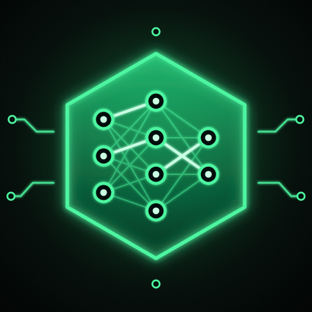
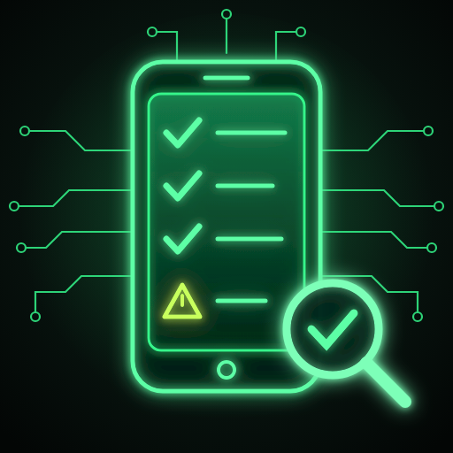

JFace
Seguiment facial en temps real. Detecta el gir del cap, l'obertura de la boca i l'estat dels ulls, i envia les dades a la micro:bit per Bluetooth. Ideal per a controlar robots o interfícies amb gestos facials.
RobHort
El guardià del teu bancal. Detecta gats, ocells i persones amb la càmera utilitzant models d'IA optimitzats. Tres modes de detecció segons les necessitats: ràpid, precís o llarga distància.
Teachable Microbit
Connecta els teus models de Teachable Machine amb la micro:bit. Admet reconeixement d'imatges, àudio i postures. Crea les teues pròpies aplicacions d'IA sense programar.

Màquina Ensenyable
Entrena models d'IA directament al navegador, sense programar ni necessitar cap compte. Crea classificadors d'imatges, sons, postures i mans amb les teues pròpies dades. Exporta els models i usa'ls en altres projectes.

Test del mòbil
Comprova si les aplicacions funcionaran en el teu dispositiu. Prova la càmera, el micròfon, el Bluetooth i la connexió, i et diu app per app si anirà bé; si no, t'explica per què i com arreglar-ho (també amb Family Link).